Beyond Positional Encoding
A 5D Spatio-Directional Hash Encoding
Philippe Weier 1,2 ·
Lukas Bode1 ·
Philipp Slusallek2 ·
Adrián Jarabo1 ·
Sébastien Speierer1
1 Meta 2 Saarland University / DFKI
What is a neural encoding?
Motivation — how do we encode a direction?
Background — the multiresolution HashGrid (Müller et al. 2022)
Can't we just hash directions as well?
the toy task: learn an environment map —
L(d ) , a purely
directional signal
3D HashGrid (x, y, z)
directions are just a thin shell
2D HashGrid (θ, φ)
cells collapse at the poles
From icosahedron to HashSphere
HashSphere — learning an environment map, equal memory
2D HashGrid · (θ, φ) pole singularities
relMSE 2.32 · FLIP 3.62
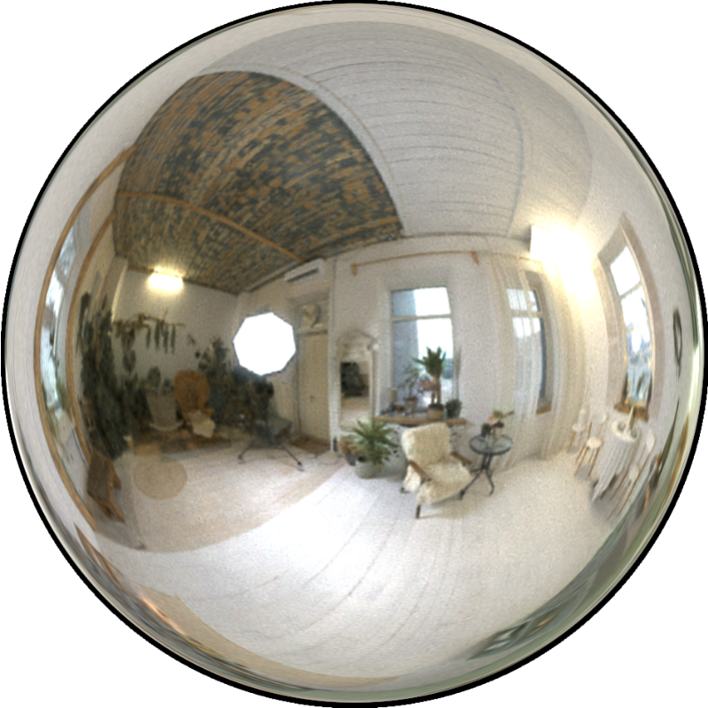
3D HashGrid · (x, y, z) 2D manifold in 3D
relMSE 2.28 · FLIP 5.03
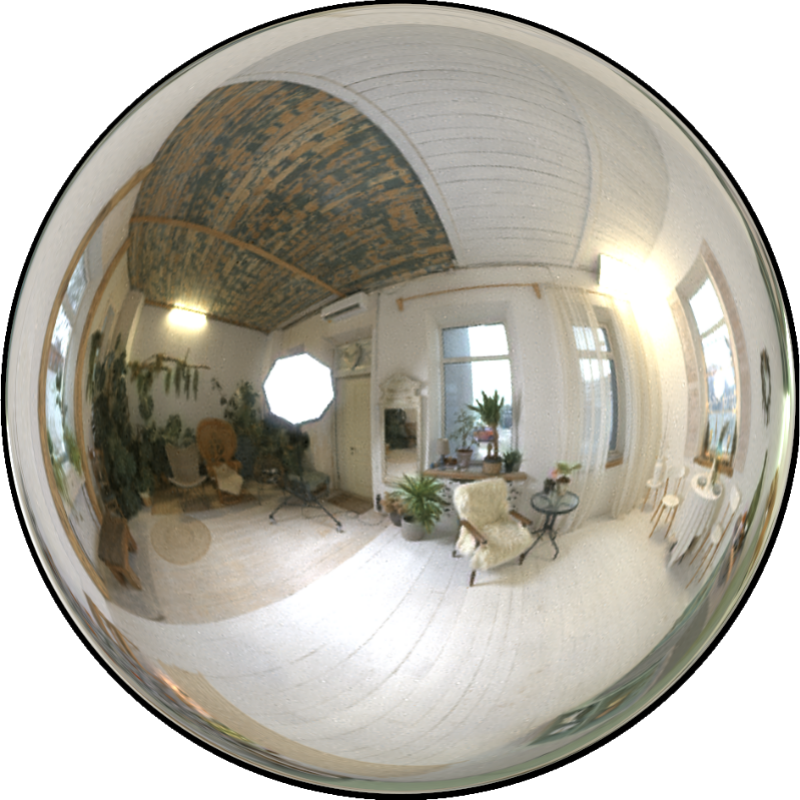
HashSphere (ours)
relMSE 1.41 · FLIP 3.28
On-surface 5D radiance field reconstruction
trained with 256 views until convergence
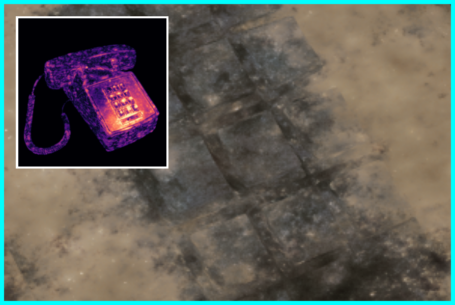
6D HashGrid · FLIP 0.118
HashGridSphere · FLIP 0.035
Why joint indexing matters
concatenated
HashGrid
f(x)
one-blob / SH
f(d) — global!
[ f(x) ; f(d) ]
Small
MLP
64 × 3
must modulate d by
x
directional detail
learned by the network
joint
(ours)
θ[ h(corner , vertex ) ]
every entry is
spatio-directional
f(x,
d)
Tiny
MLP
16 × 2
delegates capacity to
the encoding
directional detail
lives in the encoding
Application — neural path guiding (the 5D signal: incident radiance
Li(x, d))
Path guiding — Veach Caustics, equal samples
Rath et al. — positional HashGrid + one-blob directional encodingOurs — the HashGrid Sphere (same framework, only the
encoding swapped)
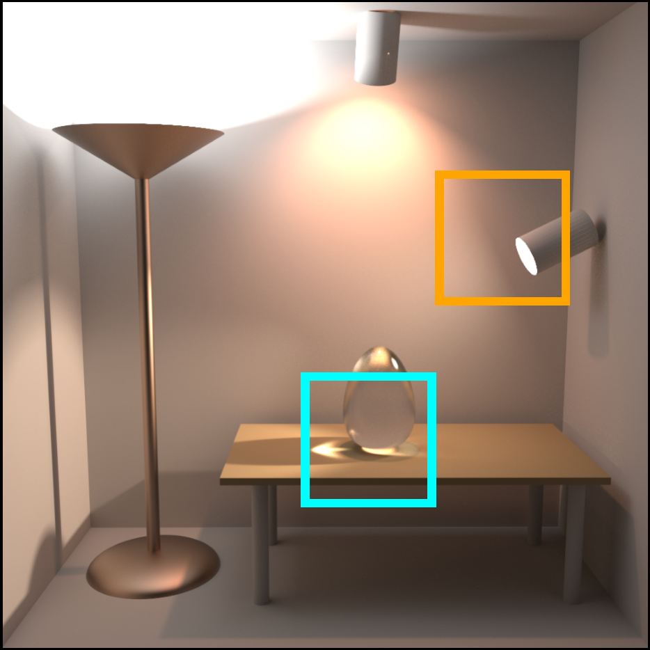
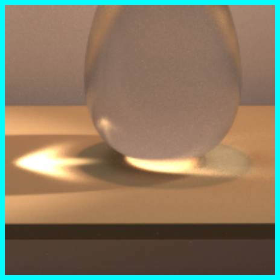
ReferenceMSE
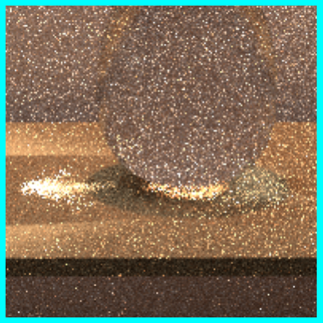
Rath M=80.161
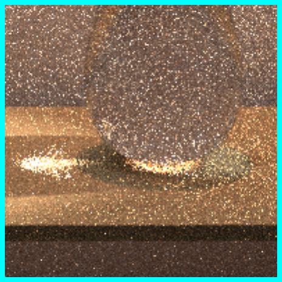
Rath M=160.206
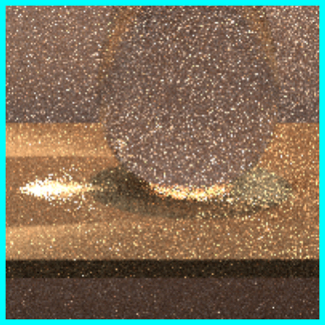
Rath M=320.171
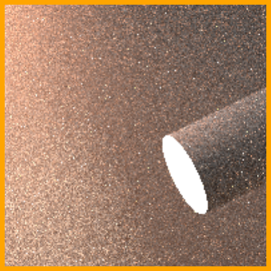
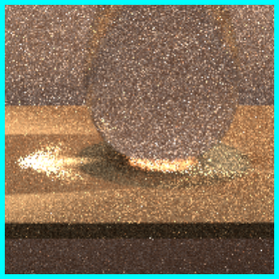
Ours M=80.123
Ours M=8 already beats Rath M=32
Equal rendering time — Sci-fi Hall
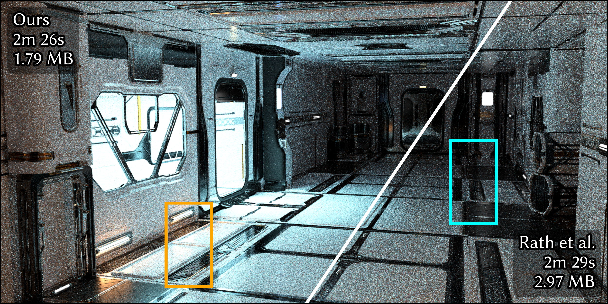
M = 16 for Ours · M = 24 for Rath et al.
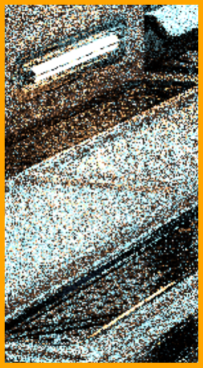
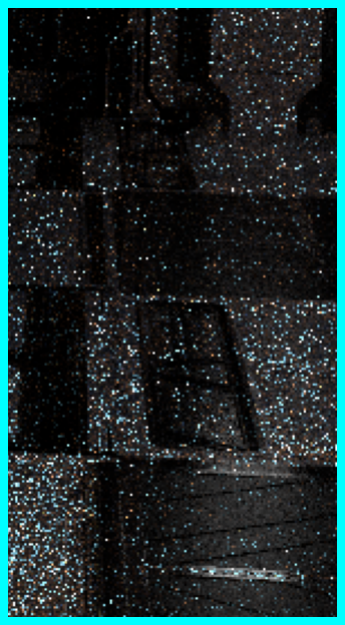
Rath · 32 spp1.848
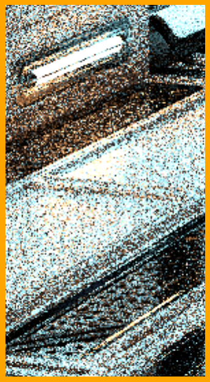
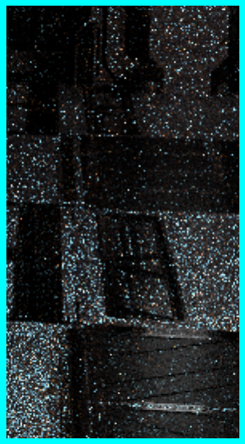
Ours · 32 spp1.400
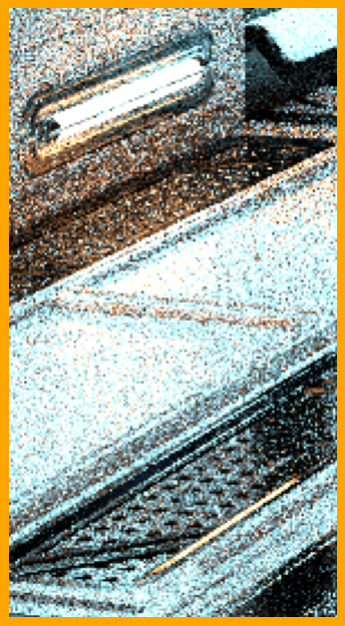
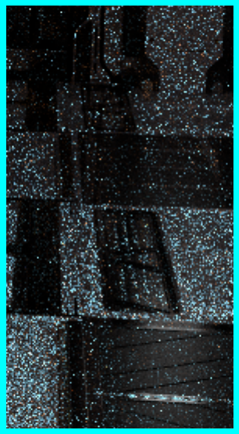
Rath · 128 spp0.561
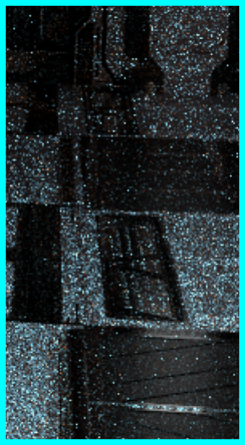
Ours · 128 spp0.250
2.25× lower variance, 0.6× memory
Application — neural incident radiance caching
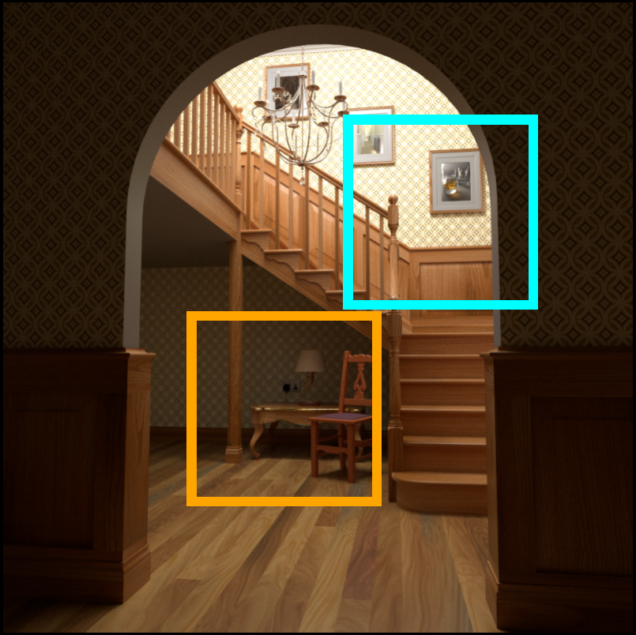
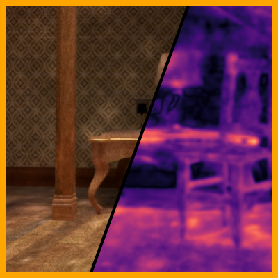
Rath · FLIP 0.281
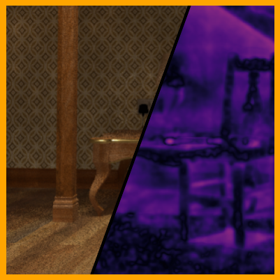
Ours · FLIP 0.205
Limitations — nothing is free
hash-table lookups per level
HashGridSphere · 8 × 3 = 24
relative runtime (guiding, fwd+bwd)
Rath et al. (small MLP) · 1.00×
pays off when the angular signal is high-frequency —for smooth radiance, a lightweight directional encoding is still the
right tool
Thank you for your attention !
HashSphere — hash encoding on 𝕊²
HashGrid Sphere
Hash encodings, finally native to the sphere .
https://weiphil.github.io/portfolio/directional_hash_encoding